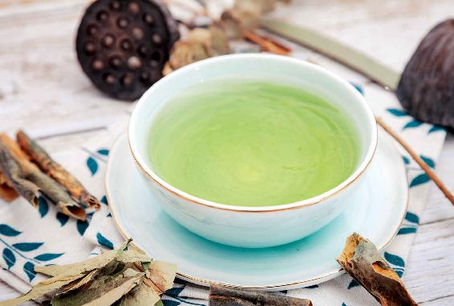
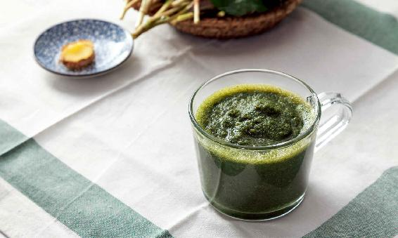
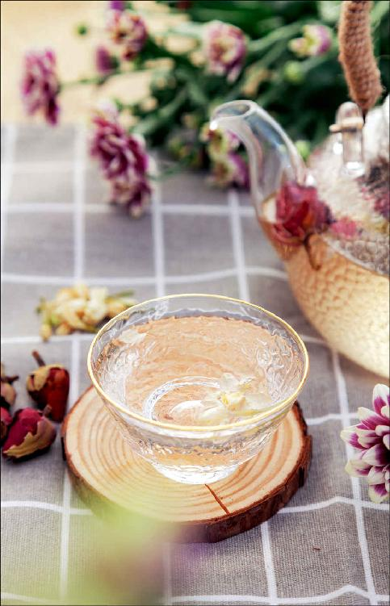
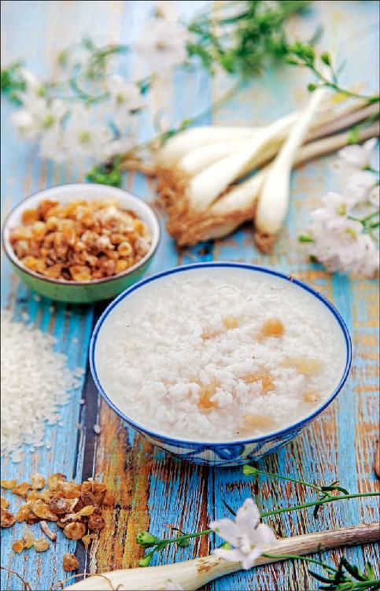
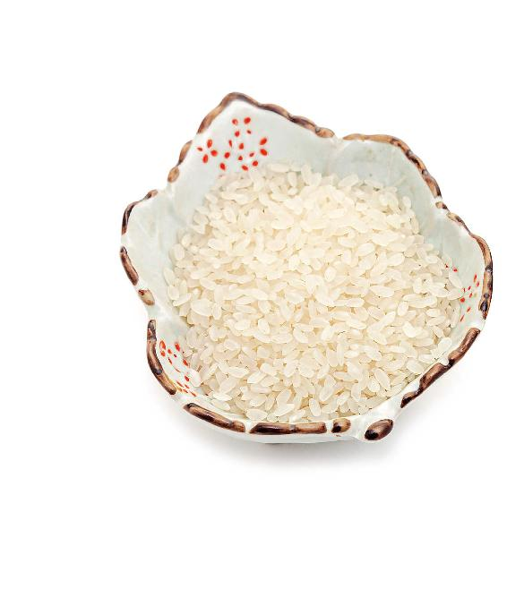
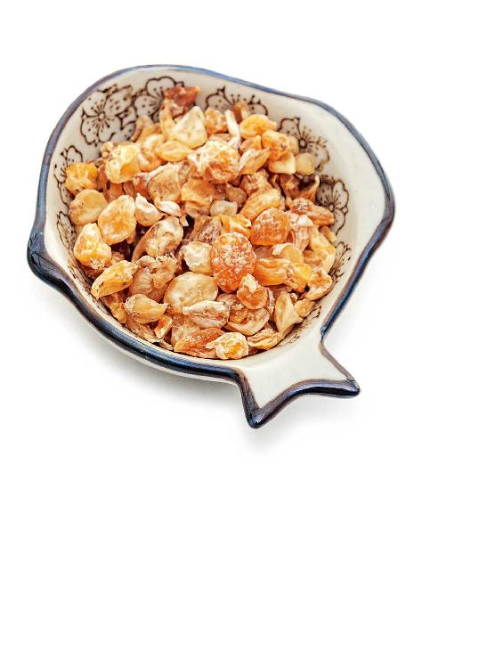
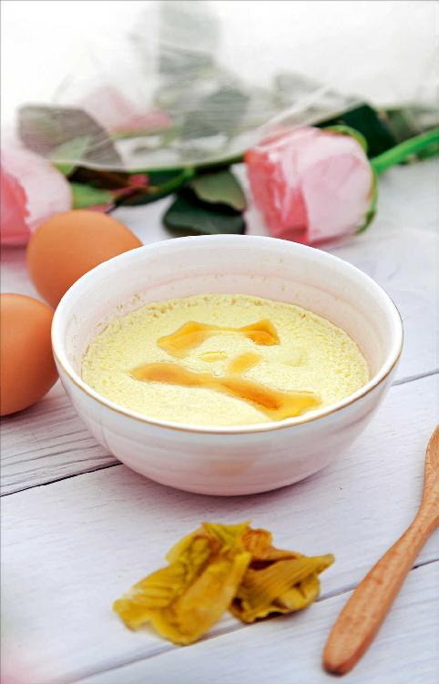

湿气侵袭人体是因时而异的，也是因人而异的，不同的人群都有各自的薄弱环节，是湿气最容易侵袭到的。
那不同的人群如何祛湿呢？
女性是一个很容易产生湿气的群体，湿气对女性的影响在全身都有表现。如果一个女性长年累月都有湿气的话，生殖系统往往会受到很大的影响。
因为湿气的特点是往下走，所以如果女性想要知道自己有没有湿气，那么就先检查自己的生殖系统是否有各种各样的亚健康症状，比如，白带过多、月经不调。如果再严重的话，有些女性朋友还会出现生育方面的问题。
当湿气侵袭到女性的下半身，女性最常见的外在表现有两个：
第一，下巴的部位容易长痘痘。这个痘痘不是青春痘，不是只有年轻的女孩才会长，很多年纪大的女性也会长，这其实是生殖系统有湿气的一种外在表现。
第二，人会胖。这种胖其实是一种水肿，在年轻的女性身上表现为大腿比较粗，而且怎么减也减不下去；在年纪大一点的女性身上就表现为腰腹部比较肥胖，还有上臂粗壮……
女性朋友面对自己体内常年的湿气，应该怎么调理呢？

第一，要顺时来调理，在每一个不同的节气吃当季的食方。
第二，如果是湿气引起的下巴长痘痘，急性期可以用鱼腥草来调理；如果是湿气引起的肥胖，有热的人可以用荷叶加冬瓜皮煮水来调理，有寒的人可以用荷叶加陈皮来调理。
第三，如果湿气主要盘踞在生殖系统，可以用生姜、大枣，再加上花椒一起煮水来喝。
花椒是一种很好的、能帮助人体祛湿的食材。
如果您要喝汉宫椒枣茶，最好是从立夏开始喝。在秋天调理体内的湿气，还可以用花椒水来泡脚，加上一点艾叶、生姜，这样祛湿更有效果，而且可以重点祛除生殖系统的湿气。
女性朋友要特别注意，如果生殖系统被湿气所伤的话，后果是比较严重的，很可能会引起生殖系统的各种问题，甚至会导致不孕不育。
当您一旦感觉到自己的下半身有湿气的时候，就要尽快地去调理它。用花椒、生姜和艾叶来煮水泡脚就是一个比较好的方法。
湿气还会在一些朋友的皮肤上表现出来，比如，换季的时候长湿疹，在急性期，您就要用到鱼腥草了。
您可以用新鲜的鱼腥草榨汁来喝，这样效果会比较快速。如果您的脾胃比较虚寒，可以在榨汁的时候加两片生姜，这样就不怕寒凉了。

痰湿实际上是湿气的进一步发展，湿凝固为痰，而这种所谓的痰，不一定是有形之痰。
有些男性朋友常年咳嗽、痰多，这是痰湿，但更多的人表现为血脂高。
通常男性湿气太重的话，就容易患脂肪肝或者高脂血症。
男性体内如果有了湿气，也有一些外在的表现，比较常见的就是泌尿系统容易出现问题。比如，小便时有尿不尽的感觉，或者尿急、尿痛，甚至有前列腺增生等。
这样的一些表现，都是由湿气引起的，这时男性可以利用鱼腥草来调理，也可以通过调理肝来祛湿。虽然肝和湿看起来没有关系，但实际上当男性把肝气疏理好了之后，祛湿的通道才会畅通，湿气才能排出体外，身体就不会由于痰湿而让血脂过高或者患脂肪肝了。
如果男性朋友有痰湿的话，建议在春天的时候多喝三花茶。
三花茶是用玫瑰花、茉莉花、月季花一起泡的茶。
如果是秋天，还可以在三花茶里加一些乌龙茶。乌龙茶也是清热、祛湿的，在秋天喝，还有降血脂的作用。
上面我分享了关于湿气对男女会有不同的影响，但并不是说男性只会有这些问题，女性只会有那些问题，而是想让大家了解男性和女性如果被湿气所伤，更容易中招的是哪些部位，更容易发生的是哪些症状。
因为湿气是一个非常复杂的问题，所以我们还是要坚持顺时而食，再根据自己的体质进行有重点的调理，这样才能有效地防范湿气。

读者评论：个个喝得心花怒放，睡眠还好了
甜辣椒：我号召身边的朋友们喝三花茶，她们个个喝得心花怒放，睡眠也好了。
允斌解惑：用鱼腥草煮水泡乌龙茶，不会解药劲
周洪宇：乌龙茶品种有很多，如铁观音、大红袍等，那只要是乌龙茶这个品种的就可以吗？
允斌：都可以的。
茉莉：用鱼腥草煮水泡乌龙茶解药劲吗？
允斌：不会。
老年人身上可能既湿又燥
老年人要注意自己的身上可能会出现的一些矛盾的现象——既湿又燥。
老年人很容易感觉自己身上干燥，缺水。表现为口比较干，皮肤干燥，尤其是小腿部位的皮肤更容易发干。
这种症状是不是表示老年人的身体就没有湿气呢？
其实，这是表示老年人身体的水液代谢不正常了，很可能老年人的身体含有湿气。
老年人身上的湿气主要聚集在心、肺部位
老年人的湿气主要在什么地方呢？
主要在心、肺部位。老年人要防湿气，重点就要防范在心、肺部位的湿气。因为这两个部位的湿气对老年人的伤害特别大，甚至有可能危及生命。
老年人有湿气一般都是从肺开始的，而且往往是在年轻时就积累下来的病根，如果年轻时经常感冒、咳嗽，有支气管炎等呼吸系统的病，又没有正确地调理，那就很容易在肺这个部位积累湿气，因此，一般老年人痰都比较多。
一些老年人经常咳痰，好像长年累月都去不掉这个病根，这就是肺有了湿气。特别是有些人在感冒后，可能还会引起病毒性心肌炎，说明湿气已经发展为湿毒。因此，如果老年人的呼吸系统有病的话，一定要及时去调理，不然日积月累就会影响到心脏。
有一种心脏病叫作肺心病，它是由呼吸系统的问题而影响到心脏的，其实就是由心肺系统严重的湿气长年累积造成的。
老年人要祛除心肺部位的湿气，可以用一个方子——薤白粥。
薤白既是中药，也是蔬菜，您可以在药店买到它的干品，然后跟大米一起煮粥来喝。每次用量30克左右。
这道粥可以帮助老年人祛除心肺部位的湿气，对经常咳痰、痰又很稀，特别是在夜里总咳痰的老年人，是很有帮助的。
薤白粥也是养护心脏特别好的一道粥。
如果老年人感觉到自己的心、肺部位有湿气的话，可以经常喝这道粥来保养。



小孩子如果有湿气，它更多的是体现在消化系统，也就是脾胃上有湿气。
有些小孩子经常会积食，其实积食也是一种湿气，所以给小孩子祛除湿气的话，要注意给他消食化积。
小孩子有了湿气后，往往容易表现为咳嗽，还有就是经常感冒、发热。

如果想要孩子身体好，不得病的话，就要给他的脾胃祛除湿气，建议经常给孩子吃点鸡内金粉蒸鸡蛋。
这个方子以前我推荐过，很多读者也都实践过，效果还不错。
其实，这个方子同时也可以祛除消化系统的湿气，如果家里有小孩子的话，可以常年备着鸡内金粉，用来给小孩子蒸鸡蛋吃。
鸡内金您可以去药店买，然后请药店的人帮您磨成粉，最好是磨得细一点，因为鸡内金非常硬，是很难消化的。
鸡内金粉蒸鸡蛋不仅小孩子可以吃，大人也可以跟着一块儿吃。它对于祛除湿气，以及消食化积都是很不错的。而且它还有一个好处，就是可以化胆囊中的结石，所以有胆结石的朋友也是可以经常吃鸡内金的。
其实，不仅是老年人和小孩子，如果中青年人感觉到自己也有上面说的被湿气所伤的这些情况，薤白粥和鸡内金粉蒸鸡蛋都是可以用的。
允斌解惑：顺时粥里可以加鸡内金粉
谢志凝：顺时粥里能否加鸡内金粉？
允斌：可以的，我母亲每天都是这样吃。